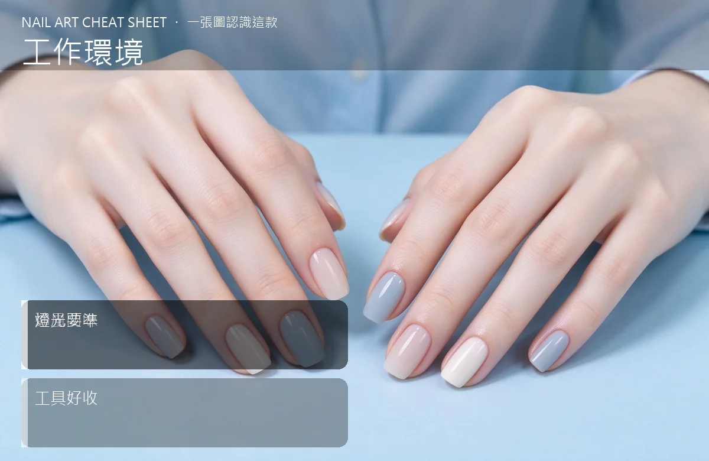

美甲工作環境是什麼？中階入門攻略
美甲工作區三大重點：通風、燈光、收納，少一樣都做不久。
工作環境原理與辨識重點：美甲師不說的通風防味
工作環境影響你做美甲的品質和自己的健康。通風差會讓卸甲水、凝膠氣味累積；燈光不夠會錯色；收納亂會找不到工具、浪費時間。一個好的工作區是長期經營的基礎。
誰適合做工作環境？開店硬體對號入座
想開工作室、家裡要架一個固定美甲位的人，都該把這三點規劃好。
工作環境美甲施作步驟：通風＋燈光＋收納
先找通風位置（靠窗或裝抽風）→ 裝一盞高演色 LED 檯燈（CRI 90 以上，顏色才準）→ 工作檯高度約 70–80cm → 工具分區收納：色膠架、工具盒、耗材櫃。
工作環境優缺點分析：美甲持久度與傷甲評估
| 優點 | 說明 |
|---|---|
| 舒適環境讓你做更久也不累，客人進門也感受得到專業度。 | 是通用流派的招牌，中階就能上手 |
| 缺點 | 說明 |
| 沒規劃好，久了自己腰酸背痛、客人也待不住。 | 前置與別在臥室密閉空間做美甲。卸甲水和凝膠的氣味長期吸入對身體不好，一定要有對外窗或抽風。沒顧好會打折 |

工作環境新手雷區：燈光要準與常見錯誤
注意：別在臥室密閉空間做美甲。卸甲水和凝膠的氣味長期吸入對身體不好，一定要有對外窗或抽風。
工作環境和其他美甲做法的差別比較
工作環境跟「店面裝潢」是兩件事。你不需要華麗裝潢，但通風、燈光、收納是基本功，這三個做好，家裡一個角落也能是專業級工作區。
工作環境美甲常見問題 FAQ
Q：要多亮的燈才夠？ A：至少 1000 流明以上、CRI 90 高演色。黃光會讓粉色看起來橘，白光會讓膚色偏冷，選自然白光（5000K）最準。
Q：一定要有對外窗嗎？ A：沒對外窗就裝抽風機＋空氣清淨機，循環空氣。氣味累積對美甲師是職業傷害，別輕忽。